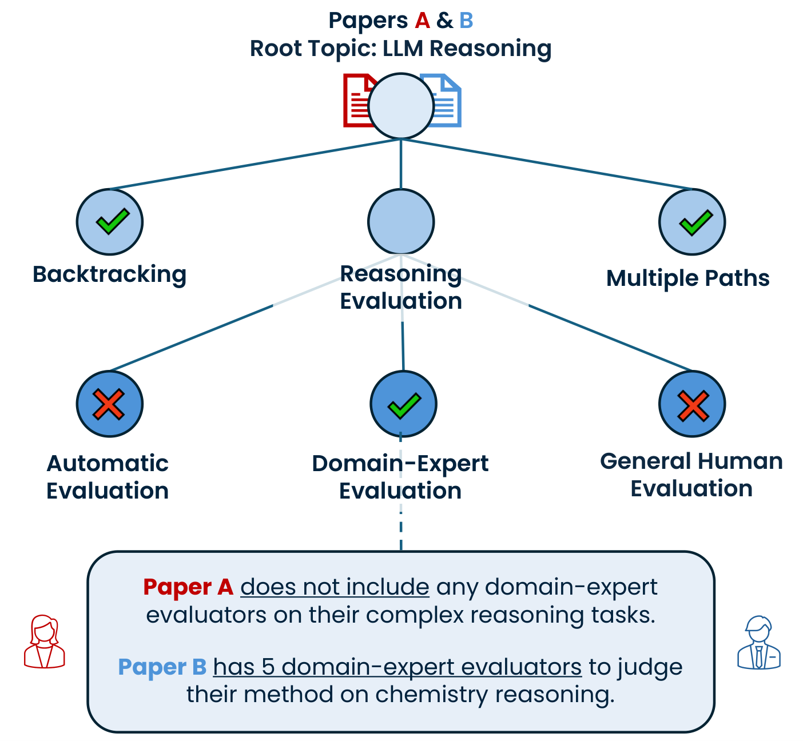
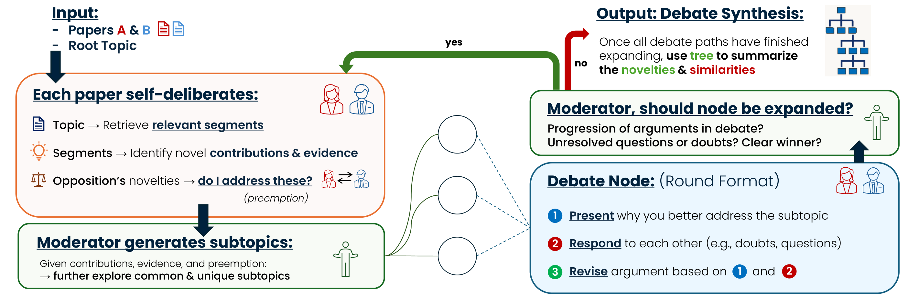

论文人格辩论
每篇论文实例化为一个 persona，为自己的贡献辩护、质疑对方的新颖性。对比推理由对抗性诱导，而非一次性生成。
把两篇论文变成两个 LLM 辩手，就"谁的贡献更好"逐话题辩论；辩论过程动态长成一棵树，最后由主持人把整棵树合成为一段对比总结。辩论不是提升答案的手段——辩论树本身就是产出。
最短理解：比较两篇论文时，直接让 LLM 写对比摘要只会得到"表面语义差异的抽取式罗列"。ToD 的做法是：让论文 A、B 各自化身辩手，围绕"我对话题 n 的贡献比你更好"辩论；主持人把辩论中冒出的子话题拆成子节点继续辩，直到论点不再推进。相似的想法会辩出长子树（谁更好），真正独有的想法会很快收敛（对方无话可说）——树的形状本身就编码了两篇论文的重叠与差异。
已有的 comparative summarization 走两步管线：先各自抽取式总结，再找异同。问题在于它捕捉的是字面语义差异，而研究者真正需要的是"BERT 的贡献放在 RoBERTa 的语境下还剩多少"这种相对新颖性判断——尤其当两篇论文互不引用、来自不同社区时。

每篇论文实例化为一个 persona，为自己的贡献辩护、质疑对方的新颖性。对比推理由对抗性诱导，而非一次性生成。
一篇论文的贡献可拆成多个子想法，各自的新颖程度应独立评估。节点 = 一个子话题的辩论回合，边 = 值得深挖的未决问题。
全文太长、只用摘要太浅。检索 query 由辩论进程动态决定，越深的节点取到的证据段落越细粒度。
与相邻工作的边界：多智能体辩论（如 MAD、ChatEval）用辩论改进最终答案；ToD 的辩论树直接就是输出物。persona 方面，Bridger 用作者 persona 做推荐（仅表示、不辩论），ToD 的 persona 代表单篇论文且主动辩护。相比 related-work 生成类工作（UR3WG、DIR），ToD 免训练、推理时运行、领域无关。来源：Related Work，Sec 2。

输入：论文 p₁、p₂ 和用户给的根话题 n₀（如 "inference-time LLM reasoning methods"）。辩题统一是"p₁ 对话题 nᵢ 的贡献比 p₂ 更好"——作者试过直接辩"更新颖"，反而得到更表面的论点；"更好"迫使双方摆机制细节。目标不是判胜负，而是收集辩论诱导出的具体推理。
每个 persona：① 用节点话题检索自己论文的 top-δ 段落（三句一段）；② 基于证据生成 ≤k 条"新颖贡献声明"（标题 + 描述 + 引用的证据编号）；③ preemption——看到对方的声明后，反向检索自己论文里能支持/反驳/澄清对方声明的段落，提前备好弹药。最后主持人根据双方声明与证据生成 ≤5 个子话题，each 映射到至少一方的贡献编号。
对每个子话题节点：双方各自 present（陈述"我为什么更好"，允许直接认输 concede）→ respond（针对对方最新发言：确认 / 答疑 / 反问 / 澄清 / 让步）→ revise（吸收交锋后修订自己的论点）。修订后的论点是该节点的最终产物。
主持人依据三个信号决定是否继续深挖：论点是否实质推进（progression）、是否有未回应的关键问题（questions）、是否已分出明显胜负（clear winner）。(progression ∨ questions) ∧ ¬winner 为真则对该节点再来一轮 self-deliberation 生成下一层子节点；否则封叶。
树收敛后，把每个节点的（话题、描述、双方修订论点）整树喂给主持人，生成一段先讲相似、重点讲差异的对比总结。
两篇论文重叠的想法（如都做"Reasoning Evaluation"）会辩出更长的子树——因为"谁更好"有得争；一方独有的想法（如只有 ToT 有 "Backtracking"）会迅速封叶——对方拿不出对应证据，主持人判定无需再辩。新颖性判断从"一句话断言"变成了"可检查的结构"。
论文表述笔误（代码是对的）：Sec 3.3 描述 preemption 过滤时写的是 "If either (1-3) are true or (4) is false, then e is filtered out"——按字面意思是"支持/反驳/澄清对方声明的证据要被扔掉、只留无关证据"，显然写反了。persona.py:is_irrelevant_evidences() 的实际逻辑：irrelevant=="no" 且 (supports ∨ refutes ∨ clarifies)=="yes" 才保留。读论文时以代码为准。
仓库很小、结构清晰：主链路约 900 行（含 prompt），其余是两个消融变体（no_tree / no_delib）和 baseline 的复制粘贴版本。所有 LLM 调用走 vLLM + outlines 的 JSON logits 约束解码——每一步的输出都被 pydantic schema 强制成合法 JSON，这是它工程上最稳的一处。
code/
├── run.py # 入口：读 TSV 数据集 → 逐对论文跑实验（tod/single/two/no-tree/no-delib）
├── data_pairer.py # 按 arXiv URL 抓论文全文
├── paper_details.py # Paper：全文按 3 句切块 + BGE 嵌入，retrieve_top_k
├── persona.py # PaperAuthor：generate_arguments / preempt / present / respond / revise
├── moderator.py # Moderator：generate_topics / is_expand / summarize_path_debate
├── debate.py # DebateNode：self-deliberation 与三步辩论的编排
├── retrieval/e5_model.py # 实际加载 BAAI/bge-large-en-v1.5（文件名有误导性）
├── dataset/ # 100 对论文 TSV（专家标注：领域/引用关系/方法或任务差异）
├── baselines/ no_tree/ no_delib/ tod_no_deliberation/ # 对照与消融
└── evaluation/ # 只有人工评测指南 PDF，没有评分代码
| 论文声称 | 代码位置 | 实际情况 | 核对 |
|---|---|---|---|
| BGE 检索嵌入（cite bge_embedding） | retrieval/e5_model.py | 文件/类名叫 E5，E5 与 SPECTER2 路径全被注释，e5_embed() 实际加载 BAAI/bge-large-en-v1.5 | 代码确认 |
| 约 3 句一个检索段 | paper_details.py | chunk_size=3，按 ". " 切句拼块 | 代码确认 |
| top-δ 证据段 | debate.py | num_evidence=5；检索时还会丢弃 ≤150 字符的短块 | 代码确认 |
| 每方 k 条贡献声明 | debate.py / persona.py | num_arg=3（prompt 说 1~3 条，schema 上限 10） | 代码确认 |
| 主持人生成 k 个子话题 | moderator.py | prompt 说"至多 5 个"，schema 允许 1~10 | 代码确认 |
| "enforce maximum tree depth" | tree_of_debate.py | depth 是全局扩展计数器：BFS 队列里任何节点扩展一次就 +1，max_depth=3 意味着整棵树最多扩展 3 次，并非"每条路径深度 ≤3" | 与论文表述有偏差 |
| preemption 过滤规则 | persona.py | 论文正文把保留/丢弃写反了（见上节黄框）；代码保留 supports/refutes/clarifies 且非 irrelevant 的证据，全空时插入哨兵句 "We do not address the opposition's claim" | 论文笔误 |
| 基座 Llama-3.1-Nemotron-70B | run.py | 硬编码 tensor_parallel_size=4——复现门槛是 4 张大显存 GPU | 代码确认 |
| "top 1% of tokens" 采样 | 各 agent 方法 | top_p=0.99，温度按环节分档：判定类 0~0.1、生成类 0.3、revise 0.45、总结 0.4 | 代码确认 |
工程亮点：全链路 JSONLogitsProcessor(schema=...) 结构化解码，argument/response/subtopic/expansion 各有 pydantic schema，从根上消灭了 JSON 解析失败；enable_prefix_caching=True 复用长 prompt 前缀。辩论历史喂给 persona 前会把 "Author i" 改写成 "You"/"Opposition" 的第一人称视角，并用 <respond_to_this> 标签圈出需要回应的最新发言——细节做得比多数 agent 论文仓库认真。
两处实打实的代码缺陷：① e5_embed() 的 joblib 缓存被注释掉了，且模型加载在函数体内——每次检索调用都重新从磁盘加载一遍 1.3GB 的 BGE 模型，self-deliberation 里每条对方声明都触发一次，跑一对论文要反复加载几十次；② debate.py:conduct_debate() 先写好的辩题信息行紧接着被 convo_history = "Debate History:..." 整个覆盖，节点话题从未真正进入辩论历史开头（各 prompt 里另有话题字段，所以影响有限但确是 bug）。
实验设置：所有系统（含基线与消融）统一使用开源模型 Llama-3.1-Nemotron-70B-Instruct（vLLM 推理，4 卡张量并行），采样 top-p=0.99（论文表述"top 1% of tokens"），温度按环节分档（判定 0–0.1 / 生成 0.3 / 修订 0.45）；检索嵌入用 BAAI/bge-large-en-v1.5，δ=5 证据段、每方 ≤3 条声明、每层 ≤5 个子话题。附录另有两组换件实验：检索模型换成 E5（BGE 检索到的段落明显更完整、更切题）、基座 LLM 换小（性能显著下降）。来源：Sec 4 + Appendix A/G/H。
NLP / 数据挖掘 / 电子工程 / 航天工程四个领域，5 位专家（各自选熟悉的论文）标注根话题、方法差异 vs 任务差异、是否互引。70 对互不引用——这是此前对比数据集没有的设定。数据随仓库公开（TSV）。
Single Stage（题目+摘要+引言直接对比）、Two Stage（先各自总结再对比）；消融 No Tree（子话题合并成一场大辩论）、No SD（去掉迭代检索，只用摘要+引言）。同一基座模型。
Factuality：逐句二值判断（1/0），整份摘要取句子平均；Breadth：整份 0–4 Likert（0="漏多个要点" → 4="非常全面"）；Contextualization：整份 0–4 Likert（0="纯抽取式罗列、异同无论证" → 4="所有要点都有有意义的综合"）。Likert 分做 min-max 归一（x/4），全部 ×100 进表。标注者 = 评测者 = 同一批专家，各评自己选的对。
均有 3 年以上科研经历、2～25 篇发表：文本/数据挖掘（三年级 PhD，10 篇）、航天电推进（三年级 PhD）、电子工程/存内计算（二年级 PhD）、数据高效 NLP（一年级 PhD，6 篇）、LLM 训练与效率（一年级 PhD，25 篇）。论文对由专家按"值得比较、自己心里有金标准"手工挑选，非随机采样。
客观标签（方法/任务、互引与否）由 NLP 与数据挖掘专家互换重标，100% 一致。评分互评只覆盖 NLP/数据挖掘子集（其他领域找不到第二位同方向专家）：Breadth 与 Contextualization 一致率 80%、序数一致性 95%；Factuality 的 ICC ≈ 0.856–0.892（"good reliability"）。航天/电子的分数只有单人背书。
| 模型 | Method 对（45 对） | Task 对（55 对） | ||||
|---|---|---|---|---|---|---|
| Breadth | Context | Fact | Breadth | Context | Fact | |
| Single Stage | 91.07 | 75.59 | 94.39 | 87.58 | 75.15 | 93.14 |
| Two Stage | 86.31 | 72.02 | 93.69 | 84.85 | 78.79 | 92.28 |
| ToD (No Tree) | 80.36 | 67.86 | 89.82 | 树去掉后 Breadth/Context 双降 → 结构是必要的 | ||
| ToD (No SD) | 88.10 | 88.10 | 78.21 | 检索去掉后 Factuality 崩到 78 → 检索管住幻觉 | ||
| Tree-of-Debate | 94.64 | 93.45 | 95.37 | 93.94 | 96.97 | 91.16 |
核心数字：Contextualization 平均 95.21 vs 最强基线 75.57（+26%），Breadth +6.85%。两个消融各自击穿一条设计原则：没有树 → 论点纠缠、广度语境双降；没有检索 → 语境还在（88.10）但事实性崩盘（78.21）。作者的结论式表述"结构负责语境化、检索负责事实性"在数字上是自洽的。
MEGClass "requires an initial set of weakly labeled data"，而 LOTClass "innovates by relying solely on label names"…… ——事实上两者都只需要类别名，字面措辞不同就被抽成了"差异"。
"Both papers leverage limited labeled data… MEGClass uniquely leverages mutually-enhancing text granularities… LOTClass 的 reliance on label names alone may introduce biases." ——先确立共同点，再在共同点之上讲差异，还给出了额外洞察。
论文 PDF + 完整 TeX（含 19 个 prompt 原文、案例附录）、代码全量 clone、100 对论文数据集 TSV 都在本地。跑通主链路需要：4×大显存 GPU（Nemotron-70B, TP=4）+ vLLM + outlines。把 run.py 里的模型换小是可行的入口（论文附录也试过换基座）。
evaluation/ 只有给人看的评测指南 PDF，没有任何评分代码。三个指标全部依赖 5 位领域专家人工打分——你可以复现"生成对比总结"，但论文里的每一个分数都无法机器复现。
容易误解：ToD 不是文献综述工具，也不做检索发现——输入就是人工选好的两篇论文 + 根话题。它解决的是 pairwise 对比这一步；要接到真实文献工作流里，前面还缺"选哪两篇来比"的环节（论文对由专家按'值得比较'手工挑选，连这一步都是领域知识密集的）。
一个想法清楚、实现诚实、评测认真但规模小的推理时框架：树结构 + 迭代检索这两个组件的必要性被消融干净地拆开了（结构 → 语境化，检索 → 事实性），这比多数 agent 论文"堆组件涨点"的叙事扎实。上限也很明确：纯 prompt 编排、无学习、评测不可自动复现、只覆盖 pairwise 对比这一小步。
与文献调研工作流的衔接点在对比/定位环节：① "树形辩论 + 每节点独立检索"可以移植为 related-work 写作或 idea novelty check 的子模块；② 100 对含 70 对非互引论文的专家标注数据集，是做论文对比 / novelty 评估时少见的可用资源；③ outlines 结构化解码 + 视角改写（You/Opposition）的工程做法值得抄。
建议归入「简单（有实质但贡献有限）」：方法真实、代码可跑、专家评测认真（相对同类已属可信）；但体量小（主链路 ~900 行 prompt 编排）、无训练成分、评测依赖人工且规模有限，够不上"复杂"档的系统深度。待你过目后定档。